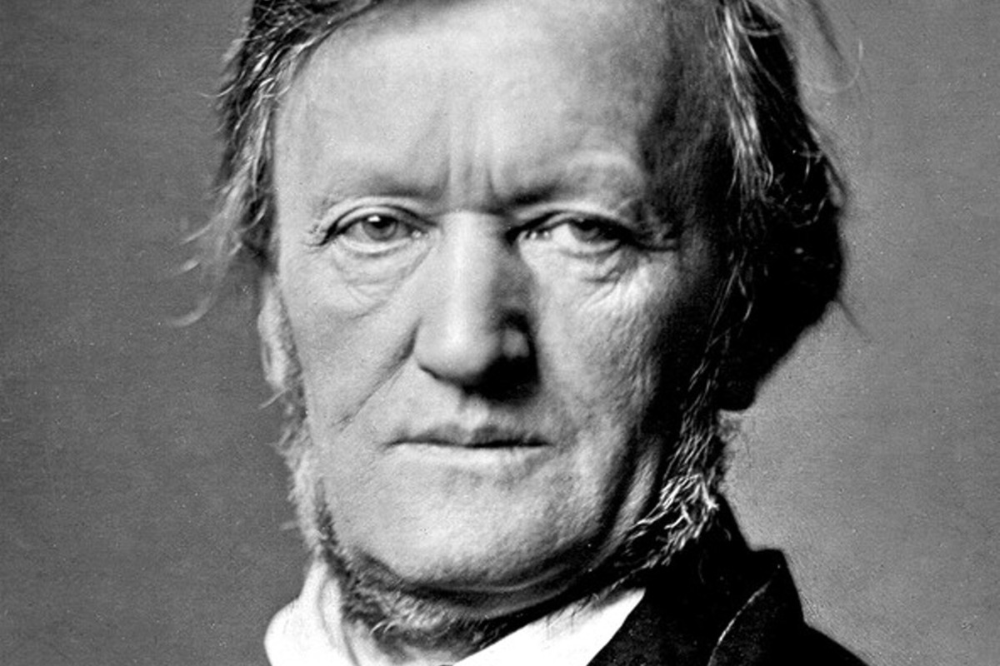

Richard Wagner
Wilhelm Richard Wagner (22 May 1813 – 13 February 1883) was a German composer, theatre director, polemicist, and conductor who is chiefly known for his operas (or, as some of his mature works were later known, "music dramas"). Unlike most opera composers, Wagner wrote both the libretto and the music for each of his stage works. Initially establishing his reputation as a composer of works in the romantic vein of Carl Maria von Weber and Giacomo Meyerbeer, Wagner revolutionised opera through his concept of the Gesamtkunstwerk ("total work of art"), by which he sought to synthesise the poetic, visual, musical and dramatic arts, with music subsidiary to drama. He described this vision in a series of essays published between 1849 and 1852. Wagner realised these ideas most fully in the first half of the four-opera cycle Der Ring des Nibelungen (The Ring of the Nibelung). His compositions, particularly those of his later period, are notable for their complex textures, rich harmonies and orchestration, and the elaborate use of leitmotifs—musical phrases associated with individual characters, places, ideas, or plot elements. His advances in musical language, such as extreme chromaticism and quickly shifting tonal centres, greatly influenced the development of classical music. His Tristan und Isolde is sometimes described as marking the start of modern music. Wagner had his own opera house built, the Bayreuth Festspielhaus, which embodied many novel design features. The Ring and Parsifal were premiered here and his most important stage works continue to be performed at the annual Bayreuth Festival, run by his descendants. His thoughts on the relative contributions of music and drama in opera were to change again, and he reintroduced some traditional forms into his last few stage works, including Die Meistersinger von Nürnberg (The Mastersingers of Nuremberg).
Other works:
"Lohengrin - Prelude"
"Faust"
"Tristan und Isolde - Prelude"
"Das Rheingold - Entry of the Gods Into Valhalla"